from download import download
import numpy as np
import matplotlib.pyplot as plt
import statsmodels.api as sm
from scipy.stats import norm, t, f
from ipywidgets import interact, IntSlider # Pour les widgets
import seaborn as snsHLMA 408: Lois gaussiennes et visualisation interactive
Auteur: Joseph Salmon joseph.salmon@umontpellier.fr
%matplotlib inlinesns.set_context("paper", font_scale=1)
sns.set_style("ticks")
sns.set_palette("colorblind")dirname = "../prebuiltimages/"
imageformat = ".pdf"# to use the default values of utils for instance
saving = True
path_target = "./utils.py"
url_shared_files = "http://josephsalmon.eu/enseignement/Montpellier/HLMA408/sharedcode/utils.py"
download(url_shared_files, path_target, replace=False)
from utils import my_saving_displayReplace is False and data exists, so doing nothing. Use replace=True to re-download the data.Visualisation des densités de Student : impact du nombre de degrés de liberté
x = np.linspace(-5, 5, num=400)def student_vis(df=5):
"""Visualize the Gaussian quantile"""
fig, ax1 = plt.subplots(1, 1, figsize=(6, 4))
ax1.plot(x, t.pdf(x, df=df), '-', lw=2, label=r"$t({0})$".format(df))
ax1.plot(x, norm.pdf(x), '--',color='k', lw=1, label=r"$\varphi_{{0,1}}$")
ax1.set_ylim(0, 0.6)
ax1.set_title(r"Densité d'une loi de student en fonction du nombre de degrés de liberté :" + "\n" +
r"$k = {0}$".format(df), fontsize=10)
plt.legend()
my_saving_display(fig, dirname, "student"+str(df), imageformat, saving=saving)
plt.show()interact(student_vis(df=1), df=(1, 20, 1));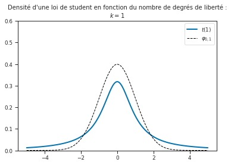
interact(student_vis(df=20), df=(1, 20, 1));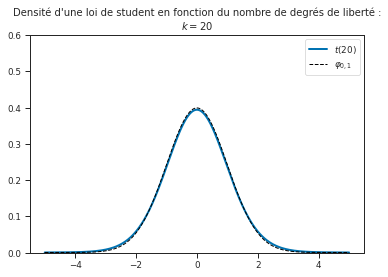
interact(student_vis, df=(1, 20, 1));Visualisation des quantiles d’une loi de Student
def student_quantile(alpha=0.05, df=10):
"""Visualize Student quantiles"""
quantile_up = t.ppf(1 - alpha / 2, df=df)
quantile_down = -t.ppf(1 - alpha / 2, df=df)
fig, ax1 = plt.subplots(1, 1, figsize=(6, 4))
ax1.plot(x, t.pdf(x, df=df), '-', lw=2)
ax1.set_ylim(0, 0.5)
ax1.fill_between(x, 0, t.pdf(x, df=df), where=(quantile_down <= x) & (
x <= quantile_up), color=sns.color_palette()[0])
ax1.set_title(r"Aire $ \alpha = {0:.2f},$ $t_{{1-\alpha/2, n-1}}={1:.2f}$ $(n={2})$ ".format(1 - alpha, quantile_up, df), fontsize=10)
plt.show()
my_saving_display(fig, dirname, "student"+str(df)+"quantile", imageformat, saving=saving)
interact(student_quantile, alpha=(0.001, .999, 0.001), df=(1, 20, 1));# Figures pour les slides:# to use the default values of utils for instance
saving = True
path_target = "./utils.py"
url_shared_files = "http://josephsalmon.eu/enseignement/Montpellier/HLMA408/sharedcode/utils.py"
download(url_shared_files, path_target, replace=False)
from utils import my_saving_displayReplace is False and data exists, so doing nothing. Use replace=True to re-download the data.x = np.linspace(-5, 5, 300)
fig, ax1 = plt.subplots(1, 1)
ax1.plot(x, norm.pdf(x, 0, 1), 'k-', lw=2, label=r"$\varphi$")
ax1.set_ylim(0, 0.5)
ax1.fill_between(x, 0, norm.pdf(x, 0, 1), where=x <= 0)
plt.axvline(x=0, c='k', ls="--", lw=1)
plt.title("$\Phi(0)=1/2$", fontsize=14)
plt.legend()
my_saving_display(fig, dirname, "Gaussian_phi0", imageformat, saving=saving)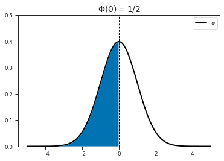
x = np.linspace(-5, 5, 300)
lim = 1
fig, ax1 = plt.subplots(1, 1)
ax1.plot(x, norm.pdf(x, 0, 1), 'k-', lw=2, label=r"$\varphi$")
ax1.set_ylim(0, 0.5)
ax1.fill_between(x, 0, norm.pdf(x, 0, 1), where=x <= -
lim, color=sns.color_palette()[0])
ax1.fill_between(x, 0, norm.pdf(x, 0, 1), where=x >=
lim, color=sns.color_palette()[0])
# plt.axvline(x=0, c='k', ls="--", lw=1)
plt.title("$\Phi(-x)=1-\Phi(x)$", fontsize=14)
plt.legend()
my_saving_display(fig, dirname, "Gaussian_phi_moins_x",
imageformat, saving=saving)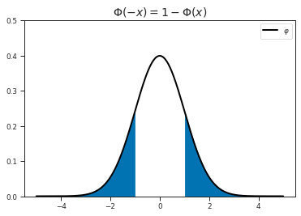
norm.cdf(1, 0, 1)-norm.cdf(-1, 0, 1)0.68268949213708592 * norm.cdf(1, 0, 1)-10.68268949213708592 * norm.cdf(2, 0, 1)-10.9544997361036416Loi de Fisher
Quantiles
from scipy.stats import f
dfn, dfd = 4, 5 # degré de liberté n=numérateur, d=dénominateur
quantile = 1 - 0.05
f.ppf(quantile, dfn, dfd)5.192167772803923Visualisation des densités
x_f = np.linspace(0.001, 8, 300)
def fisher_vis(df_1=16, df_2=8):
"""Visualize the Fisher distrubution."""
fig, ax1 = plt.subplots(1, 1, figsize=(6, 4))
ax1.plot(x_f, f.pdf(x_f, df_1, df_2), '-', lw=2,
label=r"$f({0},{1})$".format(df_1, df_2))
ax1.set_ylim(0, 1)
ax1.set_title(r"Densité d'une loi de Fisher : " +
r"$F({0},{1})$".format(df_1, df_2), fontsize=10)
plt.legend()
my_saving_display(fig, dirname, "fisher" + str(df_1) + '_' +
str(df_2), imageformat, saving=saving)
plt.show()fisher_vis(df_1=2, df_2=8)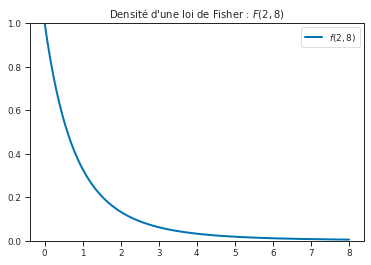
fisher_vis(df_1=3, df_2=8)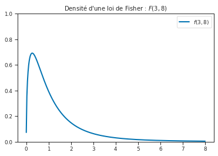
fisher_vis(df_1=4, df_2=8)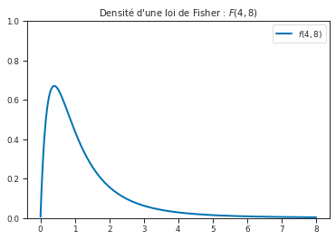
fisher_vis(df_1=8, df_2=8)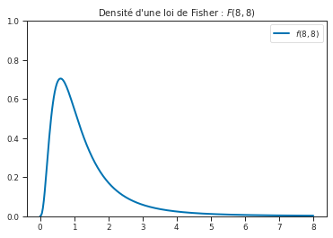
fisher_vis(df_1=16, df_2=8)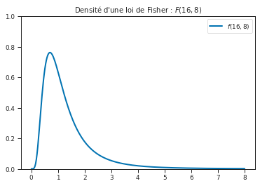
def fisher_quantile(alpha=0.2, df_1=16, df_2=8, saving=False):
"""Visualize Student quantiles"""
quantile_up = f.ppf(1 - alpha / 2, df_1, df_2)
quantile_down = f.ppf(alpha / 2, df_1, df_2)
fig, ax1 = plt.subplots(1, 1, figsize=(6, 4))
ax1.plot(x_f, f.pdf(x_f, df_1, df_2), '-', lw=2)
ax1.set_ylim(0, 1)
ax1.fill_between(x_f, 0, f.pdf(x_f, df_1, df_2), where=(quantile_down <= x_f) & (
x_f <= quantile_up), color=sns.color_palette()[0])
ax1.set_title(r"Aire $ \alpha = {0:.2f},$ $f_{{1-\alpha/2}}(d_1-1,d_2-1)={1:.2f}$ $(d_1,d_2)=({2},{3})$ ".format(
1 - alpha, quantile_up, df_1, df_2), fontsize=10)
plt.show()
my_saving_display(fig, dirname, "fisher" + str(df_1) + '_' + str(df_2)
+ "quantile", imageformat, saving=saving)interact(fisher_quantile, alpha=(0.001, .999, 0.001),
df_1=IntSlider(min=1, max=20, step=1, value=5),
df_2=IntSlider(min=1, max=20, step=1, value=10));fisher_quantile(saving=True)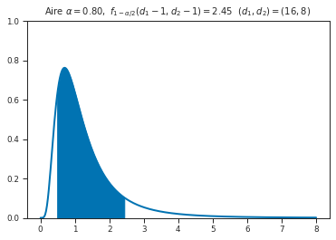
Loi de Fisher et simulation
n1 = 8
n2 = 12
sig = 3
mu1 = 0
mu2 = 3from scipy.stats import norm
n_repetition = 5000
rv1 = norm.rvs(size=[n1, n_repetition], loc=mu1, scale=sig)
rv2 = norm.rvs(size=[n2, n_repetition], loc=mu2, scale=sig)f1 = rv1.var(axis=0, ddof=1)
f2 = rv2.var(axis=0, ddof=1)fig = plt.figure()
ax = fig.gca()
ax.hist(f1/f2, density=True, bins=100, label='Loi empirique (histogramme)')
x_f = np.linspace(0.001, 5, 300)
ax.plot(x_f, f.pdf(x_f, n1-1, n2-1),
label='Loi de Fisher F({0},{1})'.format(n1-1, n2-1))
plt.legend()
plt.show()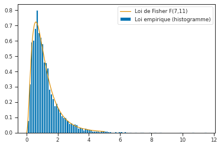
def fisher_sampling(n_repet=2000, n1=16, n2=8, mu1=0, mu2=3, sig=4):
"""Visualize Student quantiles"""
fig, ax = plt.subplots(1, 1, figsize=(6, 4))
rv1 = norm.rvs(size=[n1, n_repetition], loc=mu1, scale=sig)
rv2 = norm.rvs(size=[n2, n_repetition], loc=mu2, scale=sig)
f1 = rv1.var(axis=0, ddof=1)
f2 = rv2.var(axis=0, ddof=1)
ax.hist(f1/f2, density=True, bins=300, label='Loi empirique (histogramme)')
x_f = np.linspace(0.001, 10, 300)
ax.plot(x_f, f.pdf(x_f, n1-1, n2-1),
label='Loi de Fisher F({0},{1})'.format(n1-1, n2-1))
ax.set_xlim(-0.1,np.max(f1/f2))
plt.legend()
plt.show()interact(fisher_sampling, n_repet=IntSlider(min=1, max=20000, step=100, value=5),
n1=IntSlider(min=1, max=20, step=1, value=5),
n2=IntSlider(min=1, max=20, step=1, value=10),
mu1=(0, 5, 0.1),
mu2=(0, 5, 0.1),
sig=(1, 10, 1));